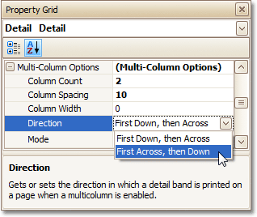
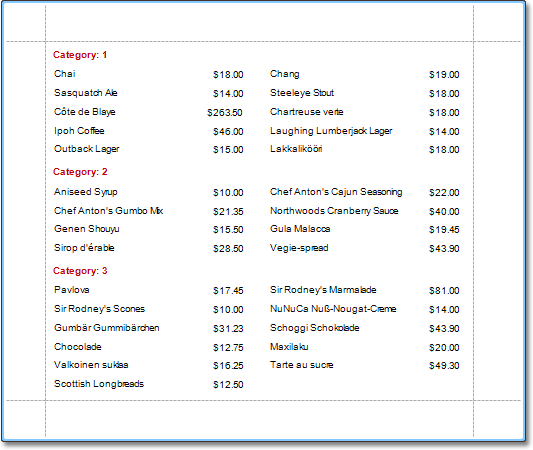

Multi-Column Report
This tutorial describes the steps to create a multi-column report, meaning that each page of the report document is laid out in a specified number of columns.
To demonstrate the multi-column feature, we'll use a report with grouping, similar the one created in the following tutorial: Change or Apply Data Grouping to a Report.
Select the Detail band, and in the Property Grid, expand the Multi-Column Options section.
First, set the required Mode. It determines whether the number of columns is manually specified, or it depends on the fixed column width.

Then, if you've chosen to Use Column Count, set the Column Count to 2, and Column Spacing to 10.
The Direction determines the order in which records of the same group are processed.

Now, on the Detail band's surface a grey area appears, delimiting the available column's width. Adjust the controls width, so that they fit within the effective borders.

The multi-column report is now ready. Switch to the Preview Tab, and view the result.
